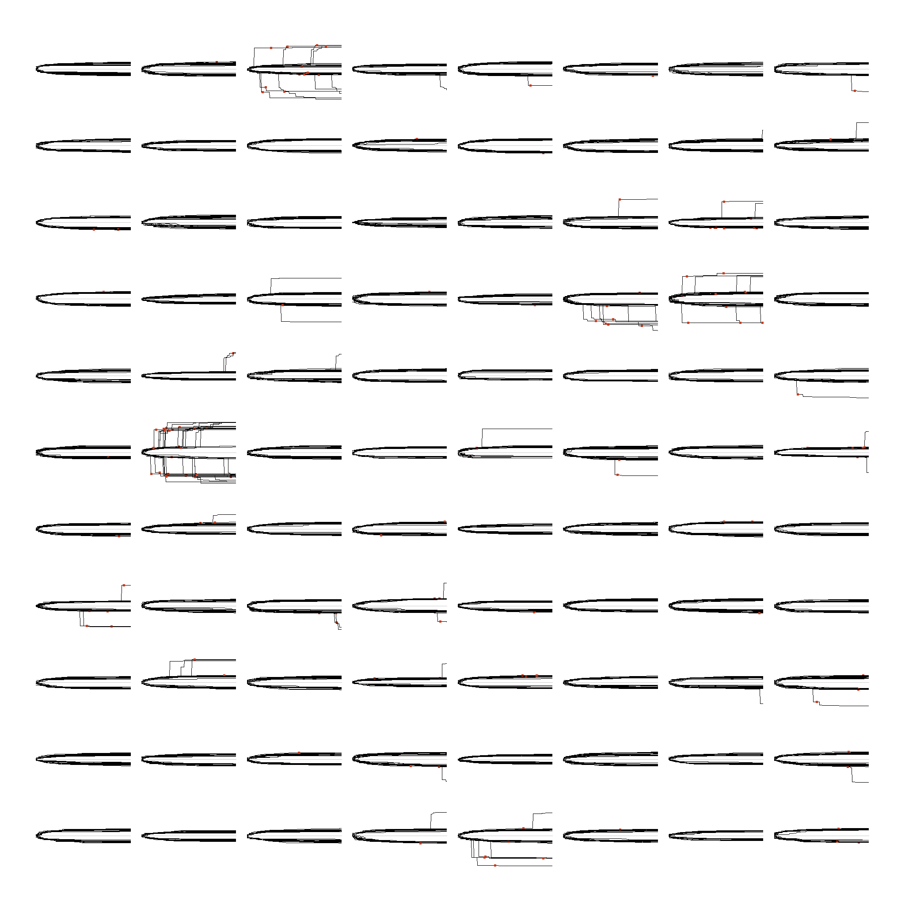

the fourth experiment, pre-registered, run once
{{ANSWER}}
E3 found that a program's neutral descendants, which still do exactly what it does under the frozen measurement, no longer have exactly its immediate futures: the one-byte changes that would alter them are not the same changes. E4 asks what follows. From each of 88 matched pairs of founders, a program and a neutral descendant of it sixty bytes away with the identical measured signature, the lab ran 16 populations of 64 for 256 generations under one rule: each generation 64 proposals, one byte changed each; the 64 longest finite runs continue; ties are broken by a seeded order; a program that runs out of gas after more than 32 instructions never continues; nothing else is rewarded. Three temporal regions: generation 0 is known, since every founder's behaviour was measured in E3; generation 1's proposal space was mapped in advance, since E3 had already measured every one-byte change of every founder, and every one of the run's 180,224 generation-1 proposals was checked against that map; generation 2 onward is unmapped.
The question, the pairs, the selection rule, the seeds, the analysis, the outcome labels and the picture's rules were written down and anchored on Ethereum before the first proposal. Nothing below was chosen after seeing the data; where the frozen analysis script turned out to be defective, the defect is reported, not repaired.

{{CAPTION}}
One primary measurement, one secondary, one tertiary, stated before the run with their outcome labels listed in advance; none is called success. Each is read by its own rule and nothing else.
{{INSTRUMENT}}
{{REPRO}}
{{EDITION}}The catalogue states facts. The lab records what executed. The readings interpret. This page is the lab's. readings · catalogue · as text: e4.md · llms.txt
created by Bushi